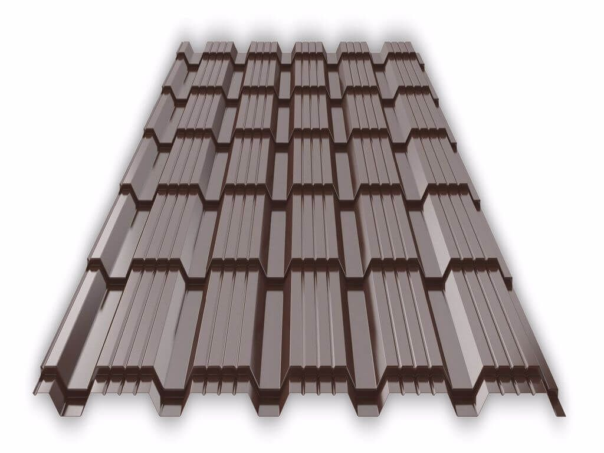

Супер Монтеррей
Металлочерепица Супер Монтеррей — это современное кровельное покрытие, имитирующее классическую керамическую черепицу, но обладающее всеми преимуществами металлических материалов. Универсальный профиль “Супер Монтеррей” отличается плавными волнами, эстетичным внешним видом и высокой прочностью. Идеально подходит для частных домов, коттеджей и коммерческих объектов.
Технические характеристики:
• Профиль: Супер Монтеррей (Super Monterrey)
• Высота ступеньки: 17 мм
• Высота волны: 25 мм
• Шаг волны: 350 мм
• Ширина общая: 1190 мм
• Ширина рабочая (полезная): 1100 мм
• Толщина стали: 0.4–0.5 мм (в зависимости от исполнения)
• Длина листа: от 0.5 до 6 м (возможна резка под заказ)
• Материал: оцинкованная сталь с полимерным покрытием
• Покрытие: полиэстер, матовый полиэстер, пурал, пластизол (по выбору)
• Цвет: по каталогу RAL
• Масса 1 м²: около 4.0–5.0 кг
Преимущества:
• Привлекательный внешний вид, приближённый к натуральной черепице
• Устойчивость к выцветанию и коррозии
• Малый вес — снижает нагрузку на стропильную систему
• Простота монтажа и транспортировки
• Долгий срок службы (до 50 лет при правильной установке и эксплуатации)
Узнать цену
Профнастил С-8
Профнастил С-8 — это универсальный строительный материал, используемый для облицовки фасадов, возведения заборов, перегородок, а также временных сооружений. Отличается легкостью, простотой монтажа и доступной ценой.
Технические характеристики:
• Марка профиля: С-8
• Высота волны: 8 мм
• Ширина общая: 1200 мм
• Ширина рабочая (полезная): 1150 мм
• Толщина металла: от 0.35 до 0.7 мм (в зависимости от исполнения)
• Длина листа: от 0.5 до 12 м (изготавливается под заказ)
• Материал: оцинкованная сталь
• Тип покрытия: без покрытия / полимерное (Полиэстер, Пурал и др.)
• Цвет: по каталогу RAL
• Вес 1 м²: от 3.5 до 6.5 кг (в зависимости от толщины)
Преимущества:
• Устойчивость к атмосферным воздействиям
• Простота в транспортировке и монтаже
• Широкая цветовая гамма
• Долговечность и минимальный уход
Узнать цену
Венеция
Металлочерепица Венеция — это премиальный кровельный материал с выразительным объемным профилем, вдохновлённым классической итальянской черепицей. Благодаря оригинальной геометрии и глубокой волне, “Венеция” придаёт крыше элегантный и статусный внешний вид. Идеальный выбор для частных домов, загородных коттеджей и архитектурных проектов с акцентом на стиль.
Технические характеристики:
• Профиль: Венеция
• Высота ступеньки: 35мм
• Высота волны: 35 мм
• Шаг волны: 400 мм
• Ширина общая: 1190 мм
• Ширина рабочая (полезная): 1080 мм
• Толщина стали: 0.5 мм (рекомендуемая для долговечности и прочности)
• Длина листа: от 0.5 до 6 м (под заказ)
• Материал: оцинкованная сталь с полимерным покрытием
• Покрытие: матовый полиэстер, Пурал, Пурал Matt, PVDF и другие
• Цвет: по каталогу RAL и специальных коллекциях (например, под натуральную черепицу)
• Вес 1 м²: около 4.5–5.5 кг
Преимущества:
• Эффектный внешний вид с глубокой трёхмерной формой
• Прочность и устойчивость к внешним воздействиям
• Высокая стойкость к выгоранию и коррозии
• Подходит для крыш с любыми углами наклона
• Служит до 50 лет при соблюдении технологии монтажа
Узнать цену
Андалусия
Металлочерепица Андалусия — это эксклюзивный кровельный материал, сочетающий в себе изысканный внешний вид средиземноморской черепицы и высокие эксплуатационные качества современного металла. Профиль “Андалусия” отличается глубоким рельефом, мягкими волнами и скрытым крепежом, что делает крышу особенно эстетичной и надежной.
Технические характеристики:
• Профиль: Андалусия
• Тип крепежа: скрытый (без видимых саморезов)
• Ширина рабочая (полезная): 1060 мм
• Ширина общая: около 1185 мм
• Толщина стали: 0.5 мм (оптимально для прочности)
• Длина панели: фиксированная (обычно около 1,13 м, имитирует один ряд черепицы)
• Материал: оцинкованная сталь высокого качества
• Покрытие: полиэстер, матовый полиэстер, Пурал, PVDF
• Цвет: по каталогу RAL, а также декоративные текстуры (под терракоту, сланец и т.д.)
• Вес 1 м²: около 5.0–6.0 кг
• Монтаж: модульный, панели соединяются замковым способом
Преимущества:
• Роскошный внешний вид, имитирующий настоящую керамическую черепицу
• Скрытый крепеж — защита от влаги и коррозии, без видимых элементов монтажа
• Простота замены и ремонта (благодаря модульной системе)
• Устойчивость к механическим повреждениям, температурным перепадам и ультрафиолету
• Долгий срок службы — до 50 лет
Узнать цену

Каскад
Металлочерепица Каскад — это стильный и строгий кровельный материал, отличающийся геометрически выверенным прямоугольным профилем. Благодаря чётким линиям и лаконичному дизайну, “Каскад” особенно хорошо смотрится на домах в современном и классическом архитектурном стиле. Прочная, долговечная и простая в монтаже, она подходит как для жилых, так и для коммерческих зданий.
Технические характеристики:
• Профиль: Каскад
• Высота ступеньки: 25 мм
• Высота волны: 15–20 мм (зависит от производителя)
• Шаг волны: 350 мм
• Ширина общая: около 1180 мм
• Ширина рабочая (полезная): 1100 мм
• Толщина стали: 0.4–0.5 мм
• Длина листа: от 0.5 до 6 м (режется под заказ)
• Материал: оцинкованная сталь
• Покрытие: полиэстер, матовый полиэстер, Пурал и другие
• Цвет: по каталогу RAL
• Вес 1 м²: 4.0–5.0 кг
Преимущества:
• Строгий прямолинейный дизайн, хорошо подходящий для домов с симметричной геометрией
• Увеличенная прочность за счёт прямоугольной формы
• Простота монтажа и ухода
• Хорошая сочетаемость с фасадами в стиле “модерн”, “лофт”, “классика”
• Срок службы — до 40–50 лет при правильной эксплуатации
Узнать цену
Каскад
Металлосайдинг — это облицовочный фасадный материал из оцинкованной стали с полимерным покрытием, предназначенный для наружной отделки зданий. Он обеспечивает не только эстетичный внешний вид, но и дополнительную защиту стен от атмосферных воздействий. Благодаря разнообразию форм (под дерево, брус, корабельную доску и др.) и цветов, металлосайдинг подходит как для частного домостроения, так и для коммерческих объектов.
Технические характеристики:
• Материал: оцинкованная сталь
• Толщина металла: 0.4–0.6 мм
• Покрытие: полиэстер, матовый полиэстер, Пурал и другие
• Формы профиля: под бревно, блок-хаус, корабельная доска, фасадная панель и др.
• Ширина общая: 200–300 мм (в зависимости от профиля)
• Ширина рабочая: 180–280 мм
• Длина панелей: от 0.5 до 6 м (можно изготовить под заказ)
• Вес 1 м²: 3.5–5.5 кг
• Цвета: по каталогу RAL и с текстурами (под дерево, камень и т.д.)
• Монтаж: горизонтальный или вертикальный (в зависимости от профиля)
Преимущества:
• Высокая стойкость к влаге, перепадам температур, ультрафиолету
• Долговечность — срок службы до 30–50 лет
• Не требует покраски и сложного ухода
• Устойчив к механическим повреждениям
• Легкость и скорость монтажа
• Экологичность и пожаробезопасность
Узнать цену
Доборные элементы
Конек круглый / плоский
Тройник, Заглушка
Ендова верхняя / Едова нижняя
Снегодержатель
Ветровая планка
Капельник
Угол простой
Угол сложный
Направляющая Планка
Соединительная Планка
Услуги листогиба
Саморезы
Водосточные системы
Узнать цену
Профиль эконом серии
Профиль эконом серии
Weber 3-x камерный
60мм толщина профиля
Металл по раме 0.9
Двойной стеклопакет 20мм
Профиль комфорт серии SmartPro
60мм толщина профиля
Металл по раме 1.2мм+створка 1.2
Двойной стеклопакет 24мм
Узнать цену